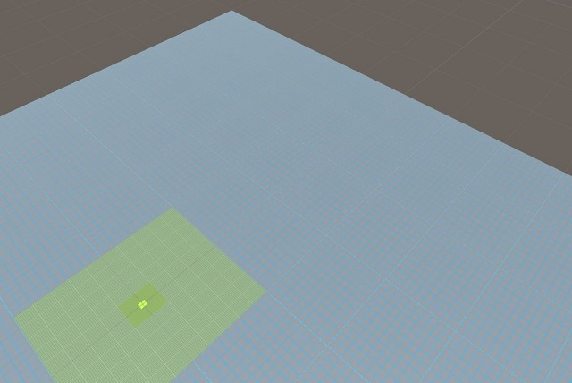

"The best way to predict the future is to invent it." --Alan Kay
|
|
Graduated with a bachelors in Game and Simulation Programming in June 2014. Working as an IT help desk technician for Liberty Mutual since 2009. After graduating, Built some experimental tech demos of crashing wave action and infinite procedural terrain. I hoped to build an indie game with some coworkers but that fell through. For more information, please contact at jeff_f_f@hotmail.com My Resume |
I've been working on vertex animated waves off and on for a while. With the procedural water shaders from the River Auto Material package, the whole thing finally came together so I added the waves in Unity to see how they looked. Each wave starts at a random "frame" of the animation (they aren't really animated frame by frame, but by cycling through simple geometric equations, but I digress) and then cycles through the animation at a slightly different rate to create chaotic timing patterns similar to real waves. The shaders were designed for rivers that were intended to be static so they don't animate as smoothly as I would like. Eventually, I'll have to build a shader that works better for this. But they work for now.

I grew up in the woods and the sense of scale in a real landscape is difficult to capture in a game. I've done some experimentation with infinite procedural terrain, and while the results have been interesting but nothing usable in a real game. Central to the idea was having several layers of mesh riding on top of each other with the inner layers being highly detailed and the outer layers being vast but low detail. The pictures below show the relationships between the layers
My extended development of my capstone game project. Using the AI and interface I had developed for the senior project, I added my procedural map builder from the "Fantasy Prototype" project described below. I also created new scripting of my own to replace other functionality that had been contributed by other team members to the senior project. I had been seeing the flat floors of the Fantasy Pototype project for awhile and decided it needed to have variable floor heights added. I modified the map sections to make the floors at one of 3 levels and created ramps that would allow movement between the floors while not causing z-fighting if they overlapped. I had originally expected to make a fairly sophisticated system basing new floor sections on an average of the surrounding floors plus a random element but completely randomized them at first and decided I like how it worked that way. I had also wanted to add support for decorations since NMS, so I created some dungeon decor and modified the code to put that in the game too. About 5-10% of the time the game failed to build a map linking the start and end points, so I added an A* algorithm to verify if the map was connected or rebuild if it was not connected.
Features of the game include:
Procedural map builder and AI code:
Procedural map builder, version 3 script in C#
Spectre AI script in C#
Play the Unity3D Web Build
Senior capstone class. This project fell victim to overly ambitious goals and inexperience and ended up being scaled back in numerous areas. It was originally based on a very simple prototype and premise, but with 16 weeks to work with instead of the 8 we had on previous projects the scope rapidly expanded to an unachievable level and ended up being scaled back to a disappointingly simple game to complete the course.
The team member doing level design wanted to create a level based on the idea of Non-Euclidean Geometry and we thought we could pull off a simple version of this using Unity Pro. I had a model that I had created for a bizarre creature that would have looked right at home in this world but had not UV mapped, let alone rigged and animated it, but it seemed like a great idea at the time. Unfortunately I made a small error with disastrous consequences when animating the model and by that time I needed to be working on the AI in order to stay on schedule. I determined it would be faster and far less risky to create, rig, and animate a simple humanoid model than to fix the original one.
This was my first time creating game AI entirely from scratch. The AI was originally planned to be afraid of light, with the player moving from the safety of one light source to another to complete the game, making it the opposite of a typical stealth game. With the now limited timeframe to complete it and poor strategy for developing the algorithms this was not completed and the enemies would either ignore the lights or get trapped in corners and dead-end hallways. Too late, I hit on the idea of doing a simplified 1D analysis of the steering weights in Excel to get the algorithm right, but by that time the AI could not be completed and I substituted a simple AI script instead. I later determined that a big part of the trouble was caused creating the model at a very small size and then scaling it up by 80x the original size which causes Unity's physics system to treat it like a giant, slow-moving object. The same issue cropped up with the simpler AI but I was able to more easily isolate the cause of the problem to the model itself.
Additionally, the map completely fell through so we ended up building a simple map out of pieces from the NMS map builder with a stairway added as a goal. I did complete the screen edge flash that was planned to show damage which was a step forward from previous projects. Ultimately, the main takeaway was a valuable learning experience about the dangers of scope creep which my prior projects had generally managed to avoid. My contributions to the final game included:
Below is the original model for the monster, which was my first major model in Blender instead of 3DS Max:
This was a fantasy FPS I created in the winter of 2013. I had rewritten the procedural map builder to correct the many issues it still had in the fall. This was made to put the new map builder to use, and to experiment with using animations in Unity. It was the map builder, monsters, and crossbow dropped into Nuclear Meiosis Soccer. The individual pieces of the map needed work on the areas they fit together but formed the basis for the map sections used in DoT.
Updated version of Map Builder Code in C# (.pdf)
"Nuclear Meiosis Soccer", a school project developed with a 4 person team over an 8-week class using Unity3D. The game is a reinterpretation of the basic shooter formula built around procedural mapping. There was supposed to be a story but implementing it got cut due to time constraints. My contributions were:
Instructor's letter of recommendation
| Code for procedural map builder: | Original (web build version) |
Play the Unity3D Web Build
"The Escape", a school project with a team of 5 students over an 8 week class using UDK to create a game level with indoor and outdoor portions and level streaming. The plot is a postmodern twist on a basic shooter leveraging the tendency of a gamer with a gun when pointed in the direction of other characters with guns to shoot first and ask questions later. My contributions included:
"BoulderBluff" was a simple C++ and Direct3D app I built in my spare time. It never progressed far enough to be playable and looks like ca.1990 3D tech, but it was a good exercise in building a Windows application from the ground up without relying on an established engine or a lot of outside instruction. It was also a good preparation for future classes that covered textured models and building an engine in Direct3D. The project was based on www.directxtutorial.com lesson 8.
Unfortunately this project made me the second most experienced graphics programmer on our team in our 8-week engine and demo class, after the overall project lead. I was picked for graphics team lead and quickly learned that graphics programming is not something to dabble in. I could build the skill set deeply enough to excel, but it is not my focus and switching focus to graphics programming is not compatible with my long term goals.
"Nybling Hoard", was a concept for a mining game inspired by the web game Mother Load, and by Minecraft. The purpose of the class was to practice skills for creating pre-rendered video for pitch documents, and for creating multimedia assets for games. Originally the map was created in sections that could be individually destroyed to enlarge the mine but this bogged down 3DS Max on my computer too much so I rebuilt it from a single mesh with the same shape that would have been produced by the individual sections. All textures, models and audio were created by me.
"Redux - Grand Tournament of Puzzle Masters", was a puzzle game created using GameMaker. The puzzles were shapes made of tiles with other shapes hidden within them. The challenge was to guess what the hidden shapes were. My contributions were the initial prototype demonstrating the concept, the artwork for the game, a share of the finished puzzle designs, and a share of the tests conducted on the game.
Tutorial video